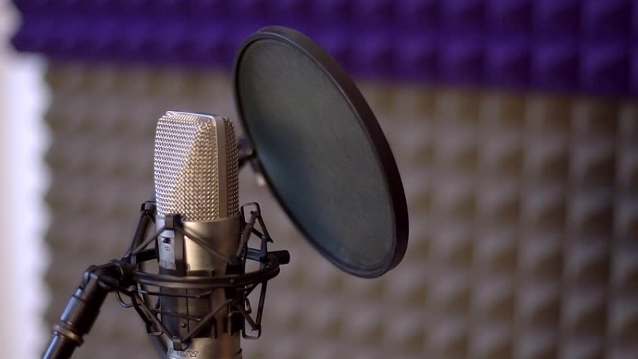

Microphones
There are 2 types of microphones based on gain levels:
-
Dynamic: These are generally used for stage performances and podcasts, coz the gain level of them are too low which helps remove the unwanted frequencies. They aren't used for recording songs because due to low gain level, they can't capture the warmth and depth of vocals.
-
Condenser: They have a higher gain level. These are used for recording songs for the reason mentioned above.
Which one is best for u?
If your room is well acoustically treated, (sounds do not echo), then go for the condenser, otherwise dynamic is good for u.
There are 2 types of microphones based on connections:
-
XLR: They use XLR cables for connection.
- Pros: they provide better sound quality than USB mics.
- Cons: they use an additional machine known as audio interface/soundcard/mixer to conver analog signals to digital.
-
USB: They use USB cables, obviously
- Pros : they don't need an interface and they are ready to plug and use.
- Cons : in terms of audio quality, they ain't better than XLR.
PO Filter: The Essential Studio Buddy
Alright, let’s talk about the PO filter—aka Pop Filter. If you’re planning to record vocals or even rap, this little guy is a must-have. It’s that circular mesh thingy you see in front of microphones in every studio setup. Now, why is it important? Let me break it down for you.
What Does a PO Filter Do?
When you’re singing or rapping, certain sounds—like “P” and “B”—can create sharp bursts of air. These bursts (called plosives) hit the mic and make annoying popping sounds in your recordings.
The pop filter acts like a shield, softening those bursts before they hit the microphone. Think of it as a tiny bouncer for your mic that keeps unwanted sounds out.

Contact us:
parthvbiz@gmail.com